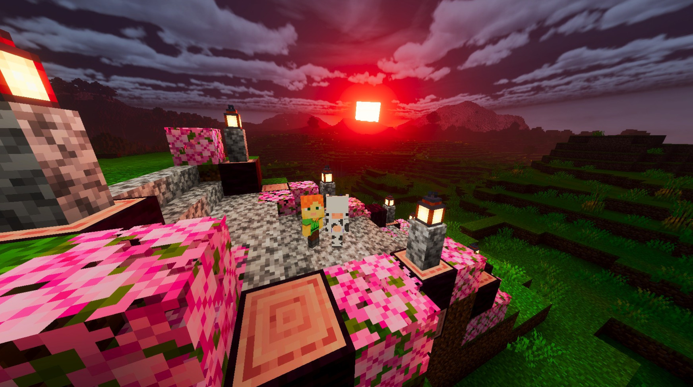
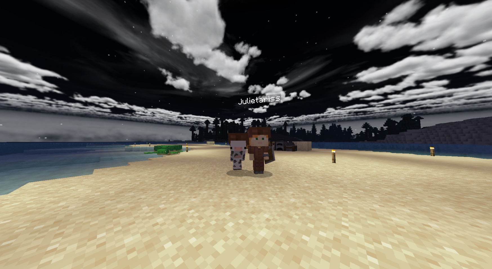
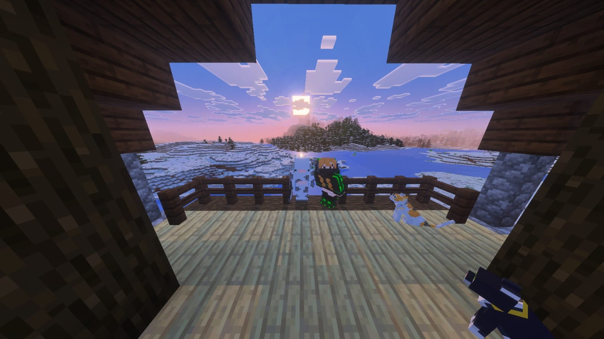
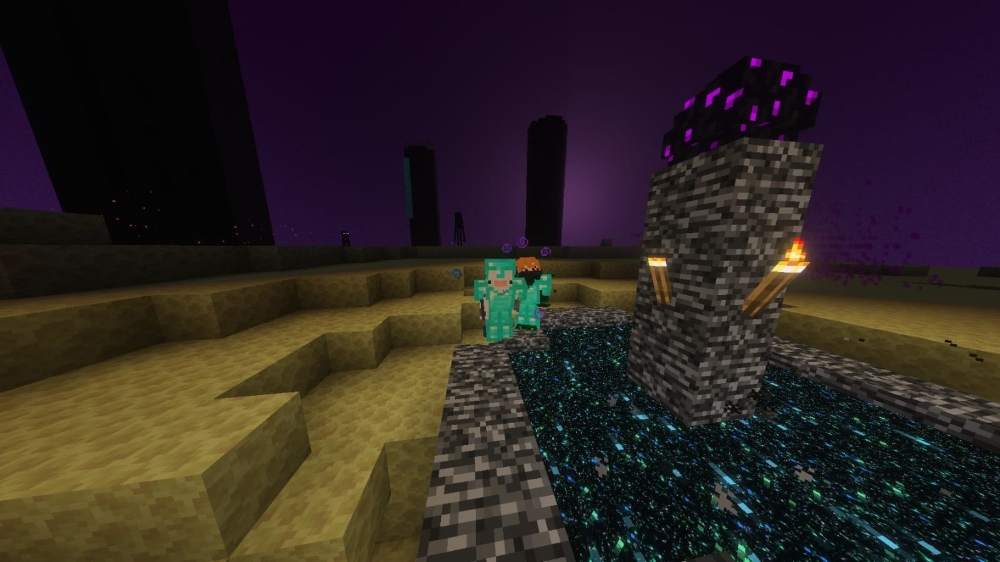
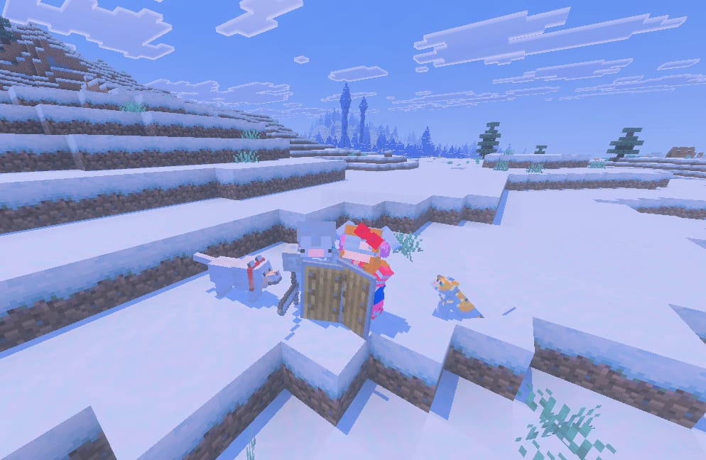
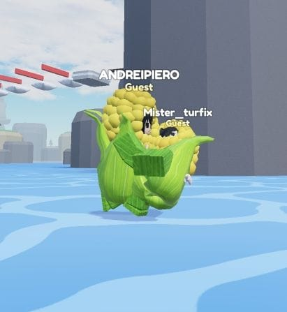

Mis razones...
- Por cómo iluminas todo a tu alrededor.
- Por esa paz que solo tú me transmites.
- Por ser mi refugio y mi mejor aventura.
- Por tu risa, que es mi sonido favorito.
- Por la forma en que crees en mí.
- Por cada pequeño detalle que compartimos.
- Por tu inteligencia y tu gran corazón.
- Por hacerme sentir que todo es posible.
- Por la magia que hay en tus ojos.
- Porque simplemente, eres el amor de mi vida.